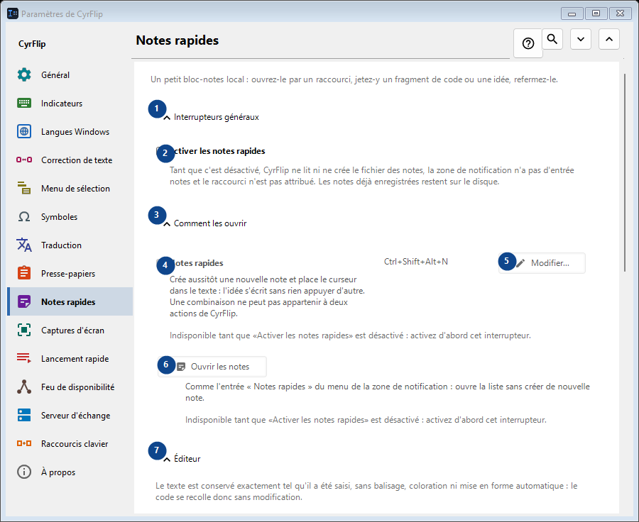
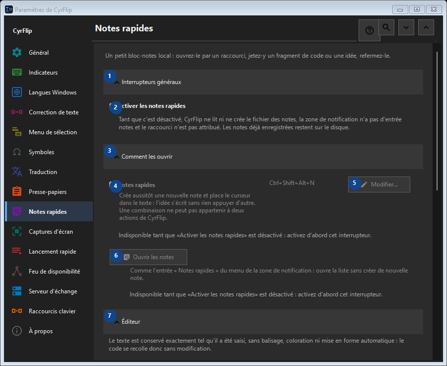

Notes rapides
À quoi cela sert
Un petit bloc-notes local : ouvrez-le par un raccourci, jetez-y un fragment de code ou une idée, refermez-le.


Ordre des actions
Les réglages s’appliquent immédiatement. Aucun ordre n’est imposé ; utilisez les groupes ci-dessous.
Éléments
1. Interrupteurs généraux
Utilisez cette commande pour l’action indiquée. Lisez toute confirmation avant de l’accepter.
Vos raccourcis2. Activer les notes rapides
Tant que c'est désactivé, CyrFlip ne lit ni ne crée le fichier des notes, la zone de notification n'a pas d'entrée notes et le raccourci n'est pas attribué. Les notes déjà enregistrées restent sur le disque.
Vos raccourcis3. Comment les ouvrir
Utilisez cette commande pour l’action indiquée. Lisez toute confirmation avant de l’accepter.
Vos raccourcis4. Notes rapides
Indisponible tant que «Activer les notes rapides» est désactivé : activez d'abord cet interrupteur. Cet élément est indisponible. Activez d’abord sa fonction ou sélectionnez une entrée.
Vos raccourcis5. Modifier - Notes rapides
Indisponible tant que «Activer les notes rapides» est désactivé : activez d'abord cet interrupteur. Cet élément est indisponible. Activez d’abord sa fonction ou sélectionnez une entrée.
Vos raccourcis6. Ouvrir les notes
Indisponible tant que «Activer les notes rapides» est désactivé : activez d'abord cet interrupteur. Cet élément est indisponible. Activez d’abord sa fonction ou sélectionnez une entrée.
Vos raccourcis7. Éditeur
Utilisez cette commande pour l’action indiquée. Lisez toute confirmation avant de l’accepter.
Vos raccourcis8. Renvoyer les longues lignes à la ligne dans l'éditeur
Indisponible tant que «Activer les notes rapides» est désactivé : activez d'abord cet interrupteur. Cet élément est indisponible. Activez d’abord sa fonction ou sélectionnez une entrée.
Vos raccourcis9. Export et stockage
Utilisez cette commande pour l’action indiquée. Lisez toute confirmation avant de l’accepter.
Vos raccourcis10. Ajouter les dates lors de l'export
Indisponible tant que «Activer les notes rapides» est désactivé : activez d'abord cet interrupteur. Cet élément est indisponible. Activez d’abord sa fonction ou sélectionnez une entrée.
Vos raccourcis11. Exporter toutes les notes en Markdown...
Indisponible tant que «Activer les notes rapides» est désactivé : activez d'abord cet interrupteur. Cet élément est indisponible. Activez d’abord sa fonction ou sélectionnez une entrée.
Vos raccourcis12. Supprimer toutes les notes rapides
Indisponible tant que «Activer les notes rapides» est désactivé : activez d'abord cet interrupteur. Cet élément est indisponible. Activez d’abord sa fonction ou sélectionnez une entrée.
Vos raccourcis13. Transfert vers un autre ordinateur
Utilisez cette commande pour l’action indiquée. Lisez toute confirmation avant de l’accepter.
Vos raccourcis14. Exporter...
Un seul fichier texte en clair avec vos notes et l'historique du presse-papiers choisi : il se lit dans n'importe quel éditeur ou sur un téléphone et s'importe dans CyrFlip sur un autre ordinateur. Le fichier n'est pas chiffré. L'importation montre ce qui sera ajouté et ne supprime rien.
Vos raccourcis15. Importer...
Utilisez cette commande pour l’action indiquée. Lisez toute confirmation avant de l’accepter.
Vos raccourcis